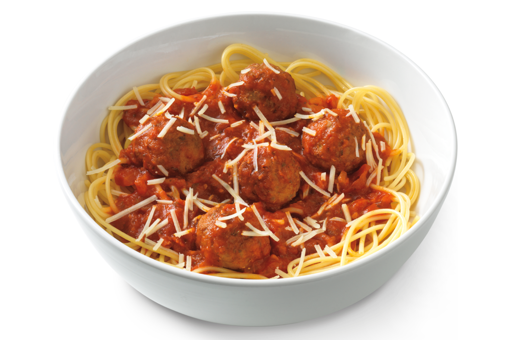

Pasta with Meat Balls

Description
Pasta is a great source of grain, but is lacking in the other important food group. Adding meat balls to pasta creates a perfectly balanced meal. Pasta with meat balls is an excellent choice for romantic appointments. It is also enjoyable to consume outside of courtship affairs.
Ingredients
- Generic Brand™ Pasta Pack
- Generic Brand™ Meat Balls
- Generic Brand™ Red Sauce
- Shredded Cheese (Optional)
- Water
Preparation
- Place water into a pot and bring it to a boil.
- Add Generic Brand™ Pasta Pack to boiling water.
- While the Generic Brand™ Pasta is cooking, heat the Generic Brand™ Meat Balls in a microwave, Generic Brand™ Meat Ball Cooker, or similar.
- When the Generic Brand™ Pasta sticks to the wall when thrown, it is done cooking. Apply the cooked pasta to a bowl or plate to eating preference.
- Add meat balls to the pasta and top with Generic Brand™ Red Sauce and any other desired toppings.
Your pasta is now ready for consumption.
Back to Home